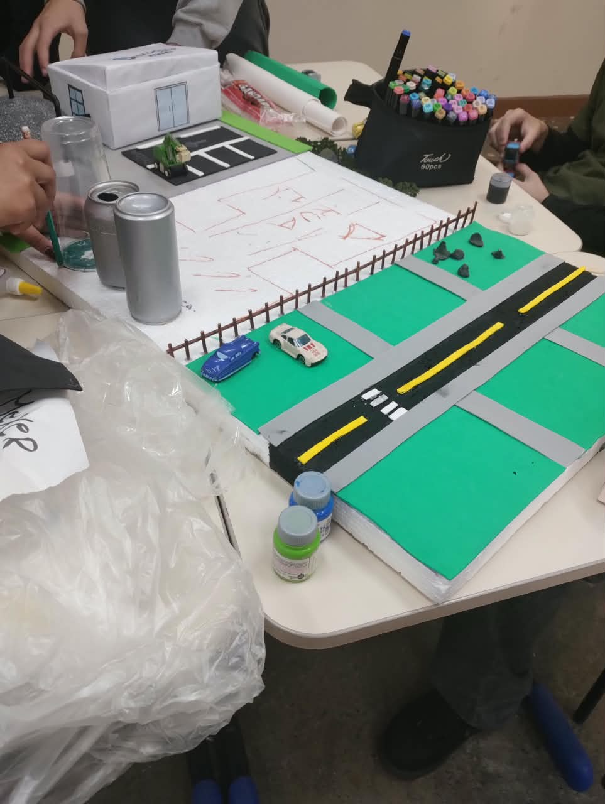
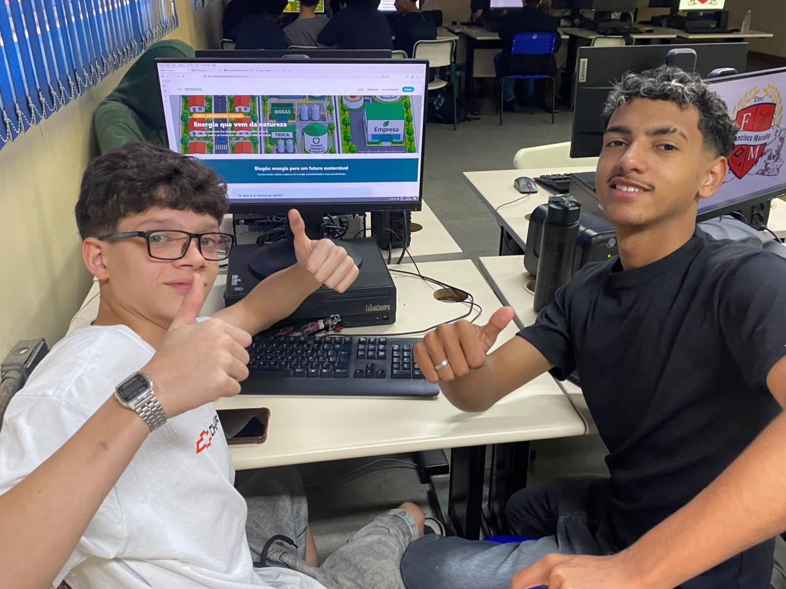
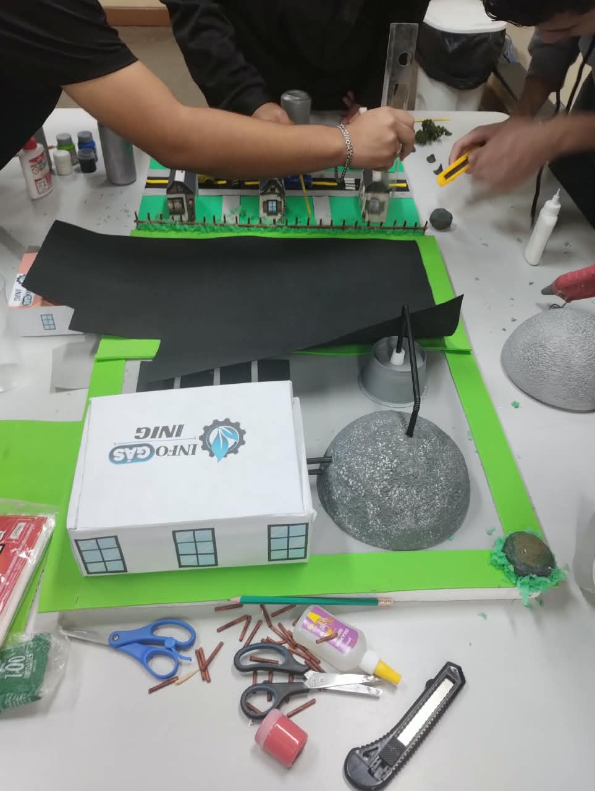
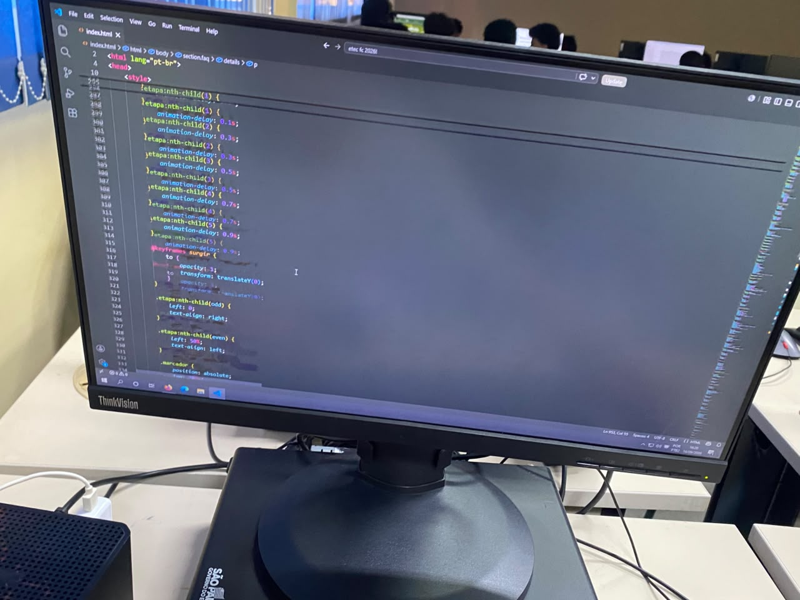
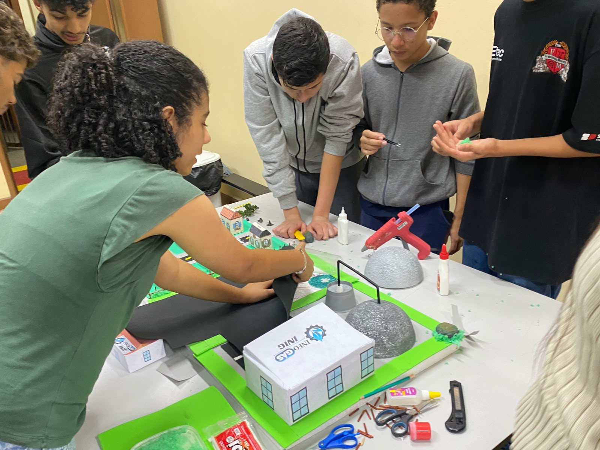
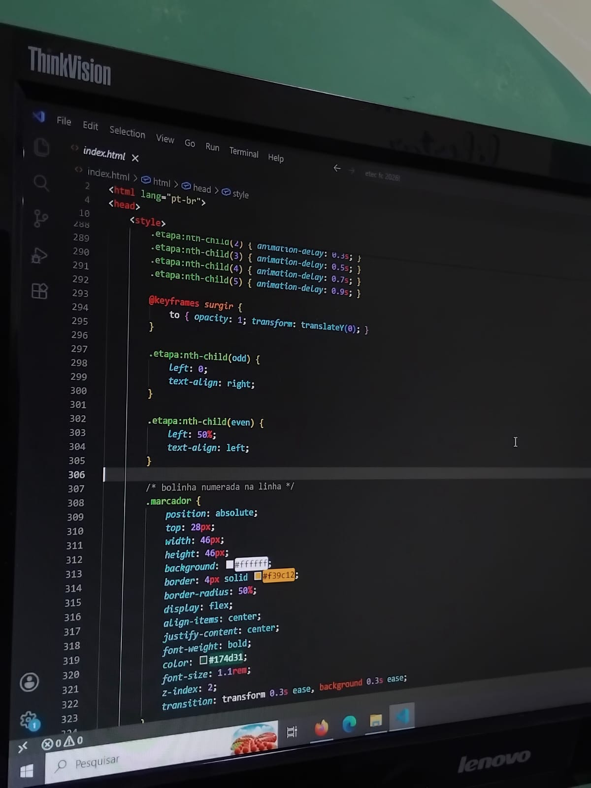

Como tudo começou
Antes da maquete, do site e da apresentação, existia uma pergunta que deu origem ao projeto.
Da pergunta ao projeto
O InfoGás surgiu durante o desenvolvimento do nosso projeto para a Feira Cultural da ETEC.
Ao observar a quantidade de resíduos orgânicos produzidos diariamente no ambiente escolar, começamos a pensar em maneiras de reaproveitar esse material.
Foi a partir dessa busca que chegamos ao biogás. A partir daí, começamos a pesquisar como funciona a digestão anaeróbia, quais materiais podem ser utilizados e como o gás produzido poderia ser aproveitado.
O projeto cresceu à medida que cada integrante passou a contribuir com suas próprias habilidades.
O começo
O ponto de partida foi uma pergunta simples:
"Será que aquilo que chamamos de
resíduo pode se transformar em energia?"
Quem faz o projeto
Para transformar a ideia em realidade, organizamos o trabalho em diferentes áreas. Cada equipe participa de uma etapa importante do desenvolvimento do InfoGás.
Equipe de Tecnologia
Responsável pela criação do site, organização das informações e apresentação digital do projeto.
TECNOLOGIAEquipe de Pesquisa
Responsável por buscar informações sobre o biogás, digestão anaeróbia, biodigestores e produção de energia.
PESQUISA E CIÊNCIAEquipe de Apresentação
Responsável por preparar as explicações e apresentar o projeto aos visitantes durante a feira.
COMUNICAÇÃOEquipe de Maquete
Responsável pelo desenvolvimento visual e estrutural da representação do sistema de produção de biogás.
CONSTRUÇÃOEquipe de Design
Responsável pela identidade visual, cartazes, elementos gráficos e organização estética do projeto.
DESIGNEquipe de Experimentos
Responsável pelos testes, observações e desenvolvimento da parte prática relacionada ao projeto.
PARTE PRÁTICACaminho do projeto
Oito momentos que mostram, em sequência, parte do caminho percorrido durante o desenvolvimento do projeto.

Primeiras impressões.
Primeiro momento de discussão sobre o tema e definição do problema que queríamos investigar.

Nossos dev's guerreiros!
Para nosso site ficar pronto, nossa equipe de tecnologia trabalhou muito para organizar as informações e desenvolver o espaço digital de forma manual e agradavel.

A bendita maquete!
A maquete foi construída para representar o sistema de produção de biogás e demonstrar como o processo funciona.

O tal do primeiro info?
Com dedicação e trabalho em equipe, conseguimos desenvolver o projeto de forma manual e digital, para ter o melhor possivel dentro dos conformes, 100% entregue.

Dedicação e trabalho em equipe e possivel?
Começamos a transformar nossas ideias em uma representação física do sistema.
Preparação para a feira
Reunimos as informações, finalizamos os materiais e começamos a preparar a apresentação.

Desenvolvimento do site
Organizamos as informações e desenvolvemos o espaço digital para apresentar nosso projeto.

O dia da Feira
Finalmente chegou o momento de compartilhar todo o trabalho desenvolvido com os visitantes.
Um projeto construído por muitas mãos.
O InfoGás nasceu da união entre pesquisa, criatividade, tecnologia e trabalho em equipe. Cada etapa representa um pouco do esforço colocado para transformar uma ideia em conhecimento.